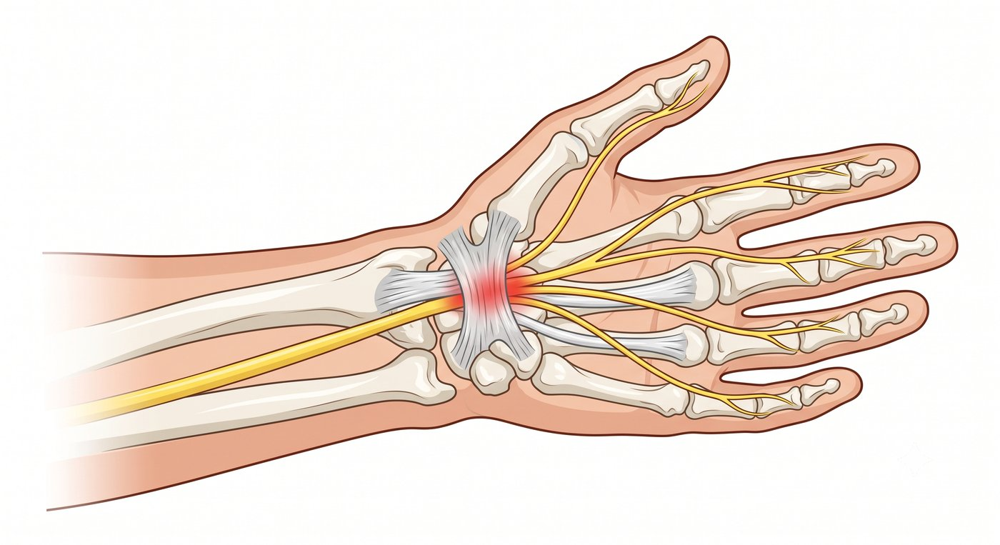

半夜常被手麻醒，起來甩一甩才舒服？這可能不是循環不好，而是手腕的正中神經受到壓迫。
您是否有過這種經驗：
晚上睡到一半，突然被手掌發麻、針刺感或灼熱感麻醒，必須把手甩一甩、搓一搓，甚至把手垂到床邊，麻木感才慢慢消退。
白天騎機車、開車、拿手機、使用滑鼠，或做家事、折衣服時，手指也容易開始發麻、脹痛，甚至覺得手變得比較沒力。
有些人拿碗盤、杯子或手機時，會突然覺得抓不穩，東西容易滑落。
很多人一出現手麻，就擔心是不是中風，或是不是頸椎嚴重退化。
但如果麻木主要集中在大拇指、食指、中指，以及無名指靠近中指的一側，而小指通常不麻，就要小心可能是腕隧道症候群。
什麼是腕隧道症候群？
手腕掌側有一個由骨頭與韌帶圍成的狹窄通道，稱為腕隧道。
腕隧道裡面有控制手部感覺與部分動作的正中神經通過。
當手腕長期重複使用、姿勢不當、肌腱發炎水腫，或因糖尿病、甲狀腺疾病、懷孕水腫等因素，讓腕隧道內壓力升高時，正中神經就可能被擠壓。
神經受到壓迫後，就會出現手麻、刺痛、灼熱感，甚至手部無力。
腕隧道症候群常見麻木位置包括：
- 大拇指
- 食指
- 中指
- 無名指靠近中指的一側
相對來說，小指通常比較不會麻。
這一點可以幫助區分是腕隧道症候群，還是其他神經壓迫問題。

為什麼晚上特別容易麻醒？
很多腕隧道症候群的患者，最典型的症狀就是夜間手麻。
睡覺時手腕容易不自覺彎曲，腕隧道裡的壓力會增加，正中神經受到壓迫，就會出現手麻、刺痛、脹痛，甚至麻到醒來。
有些人醒來後，會下意識甩手、搓手，或把手放低，症狀才慢慢緩解。
如果您常常半夜因為手麻醒來，或早上起床覺得手指僵硬、麻木，就要懷疑可能是腕隧道症候群。
什麼症狀需要特別注意？
如果出現以下情況，建議儘早由醫師評估：
- 半夜或清晨常因手麻醒來
- 甩手、搓手後會比較舒服
- 大拇指、食指、中指反覆麻木或刺痛
- 小指通常不麻
- 騎機車、開車、拿電話、使用滑鼠時手麻加重
- 手指覺得腫脹，但外觀看起來不一定真的腫
- 拿筷子、扣鈕扣、轉鑰匙變得比較不靈活
- 握力下降，拿東西容易掉
- 大拇指根部肌肉變扁、凹陷或無力
- 症狀反覆發作，影響睡眠、工作或日常生活
如果已經出現大拇指根部肌肉萎縮、虎口附近凹陷，或大拇指對指力量變差，可能代表神經壓迫已經比較嚴重，應儘早就醫評估。
手麻一定是頸椎壓迫嗎？
不一定。
很多人手麻時，會先擔心是不是頸椎出問題。
但手麻的原因很多，可能來自頸椎，也可能來自手肘、手腕，甚至和糖尿病、甲狀腺功能、懷孕水腫或長期工作姿勢有關。
腕隧道症候群和頸椎神經壓迫，症狀有時會很像，但仍有一些線索可以區分：
| 比較項目 | 腕隧道症候群 | 頸椎神經壓迫 |
|---|---|---|
| 常見麻木位置 | 大拇指、食指、中指，通常小指不麻 | 可能從肩頸、手臂一路麻到手指 |
| 典型症狀 | 夜間麻醒、甩手後改善 | 肩頸痛、膏肓痛、轉動脖子時加重 |
| 常見誘發動作 | 騎車、開車、拿手機、滑鼠鍵盤 | 低頭、抬頭、轉頭 |
| 檢查重點 | 手腕正中神經是否受壓 | 頸椎神經根或脊髓是否受壓 |
有些患者甚至可能同時存在頸椎神經壓迫與腕隧道症候群，這種情況有時稱為「雙重壓迫」。
真正重要的不是自己猜是哪一種，而是透過症狀、理學檢查，必要時搭配神經傳導檢查，找出真正被壓迫的位置。
一直拖延會怎麼樣？
腕隧道症候群一開始可能只是偶爾手麻，後來變成每天麻、晚上麻醒，甚至影響睡眠。
如果正中神經長時間受到壓迫，除了麻木與疼痛，還可能慢慢出現手部無力。
有些人會發現自己拿筷子變笨、扣鈕扣變慢、轉瓶蓋使不上力，甚至拿杯子、碗盤或手機容易掉落。
更嚴重時，可能出現大拇指根部肌肉萎縮，看起來變得扁平、凹陷。
這代表神經已經受到較長時間壓迫，有些功能不一定能完全恢復。
所以，手麻不應該只是一直忍耐。
尤其當夜間麻醒、握力下降或手部肌肉開始萎縮時，更應該儘早就醫評估。
腕隧道症候群一定要開刀嗎？
不一定。
不是每一個腕隧道症候群都需要手術。
如果症狀還不嚴重，沒有明顯肌肉萎縮或持續無力，可以先透過保守治療改善。
常見方式包括：
- 減少手腕過度使用
- 夜間配戴手腕副木，避免睡覺時手腕彎曲
- 藥物控制發炎與疼痛
- 復健與姿勢調整
- 局部注射治療
但重點是：
- 您的手麻，是不是腕隧道症候群造成的？
- 神經壓迫的程度是否已經影響手部功能？
- 目前適合保守治療，還是已經需要進一步處理？
這些都需要在門診透過症狀、身體檢查與必要的神經檢查一起判斷。
什麼是微創腕隧道神經鬆解術？
如果保守治療後手麻仍反覆發作、半夜持續麻醒影響睡眠，或已經出現大拇指肌肉萎縮、握力變差，就可能需要評估是否適合手術治療。
手術的目的，是幫被壓迫的正中神經「減壓」。
簡單來說，就是將壓迫正中神經的橫腕韌帶放鬆，讓腕隧道內的壓力下降，讓神經重新有空間，不再持續受到擠壓。
微創腕隧
道神經鬆解術是相對成熟的小型手術，會依照患者狀況，選擇傳統小傷口或內視鏡微創方式進行。
治療重點包括：
傷口小：通常在手腕掌側以小傷口進行，減少組織破壞。
精準減壓：將壓迫正中神經的橫腕韌帶切開鬆解，釋放腕隧道內的壓力。
局部麻醉為主：多數情況下可在局部麻醉下完成。
恢復較快：多數患者術後不需住院，可在短時間內恢復日常活動。
對適合的患者來說，手術目標是：
- 減少正中神經壓迫
- 改善夜間手麻與刺痛
- 減少手指麻木
- 保護手部神經功能
- 幫助恢復日常手部活動
但是否需要手術、適合哪一種方式，仍需要依照症狀嚴重度、神經檢查結果與手部功能一起判斷。
半夜手麻，不一定只是睡姿不好
很多人因為害怕手術，選擇一直忍耐。
但如果手麻已經反覆影響睡眠、工作或日常生活，就不要只是一直甩手撐過去。
讓專業醫師協助您評估，找出真正的原因，才能選擇最適合您的治療方式。
手術不是目的，重新回到生活才是目的。
把時間留給生活，不留給疼痛。